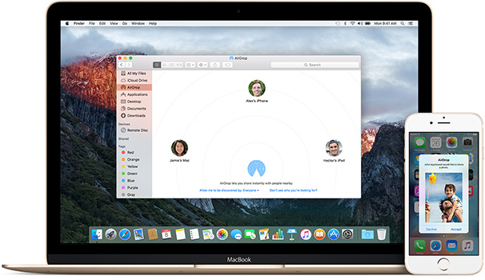

Extract Data from iPhone Backups
- Important Contacts
- Phone Call History
- SMS & iMessage Messages
- Calendar Events
- Notes
- Voice Memos
- History and Bookmarks
- Photos
- Videos
- iOS App Data
- Raw Data Files
- WhatsApp Messages


iCloud Backups
iBackup Viewer Pro now supports to download backups from iCloud on both Windows and Mac, and open in iBackup Viewer. Additionally, you can download any of the files instead of the full backup.
Encrypted iOS Backups
The Pro version of iBackup Viewer supports extracting all the featured data from encrypted iPhone backups, which is created for privacy protection. To work with the encrypted backups, please read the FAQs and upgrade to PRO version.
Save Backed up Contacts
Easily extract contacts from iPhone backups and export to Mac Address Book or Contacts.app. With iBackup Viewer, you can also save contacts as vcards (.vcf) files on disk, which are very portable to share with friends and online mail systems like Gmail.
Extract SMS, iMessage Messages & WhatsApp History
The most important feature of an iPhone backup extractor is recovering messages, iBackup Viewer fully supports extracting iMessage and SMS text messages from iTunes backups, displaying iOS styled chat conversations, saving chats to pdf files and printing out to paper. Create HTML files for all messages. Supports extracting WhatsApp message history.
Photo Attachments
Messages always contain photos and video clips to share remembered great moments, iBackup Viewer extracts the attachments for displaying and saving to files.
Video Attachments
Messages always contain photos and video clips to share remembered great moments, iBackup Viewer extracts the attachments for displaying and saving to files.
Save iOS Notes
You may have many notes that being meant on your iPhone, and you may want to extract the notes and save them on you computer. With iBackup Viewer, it is easy to extract all the notes from iOS backups and save to text files.
Export Voice Memos & Recordings
iBackup Viewer can help you to save voice recordings from your iPhone, which are extracted from iOS backups made by iTunes.
You can extract out all the memos and recordings, and play & preview the voice recordings before saving to computer.
Save and Print Phone Call History
You may have many notes that being meant on your iPhone, and you may want to extract the notes and save them on you computer. With iBackup Viewer, it is easy to extract all the notes from iOS backups and save to text files.
Extract Photos from iPhone Backups
Don't worry about loosing photos on your iPhone if you have made backups using iTunes. iBackup Viewer can extract photos from iPhone backups, you can save photos to your local hard disk on mac computer very easily with iBackup Viewer.
Export Internet Visit History and Bookmarks to Safari
There are many website urls which visited on iPhone, some of them may be very important. And you need to save the URLs to Safari, so that you can visit the sites on computer without losing them. iBackup Viewer can extract all the internet visit history and bookmark URLs, which can be exported to Safari on mac computer.
Preview App Files in Different Mode
You can preview files as text, binary, image and property list format. iBackup Viewer will detect the file format automatically according to the file extension, and show in proper format. Of cause, you may need to change the format of files with fake extensions.